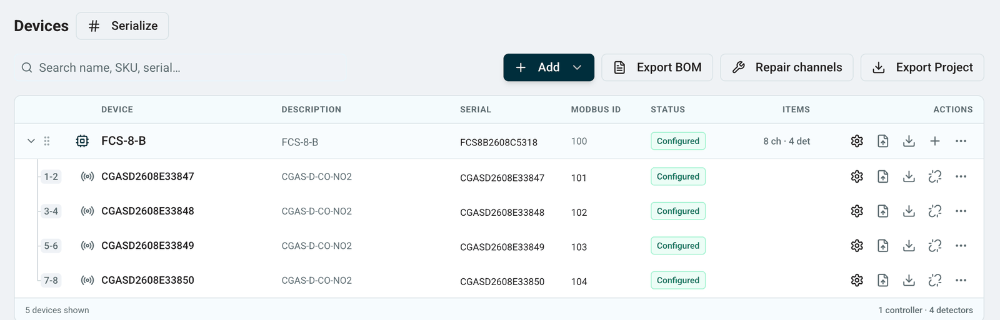

The Problem
Application engineers were building controller configurations in an Excel macro workbook, while production was managing device files and order data through a separate legacy database system. Two tools, overlapping data, no connection between them. Large configurations took nearly two hours of engineering time, the tool was slow and brittle running on VBA, and every error became a support ticket. On the production side, device configurations had to be loaded individually even for large systems, and serial numbers were tracked in a paper logbook. Neither tool scaled.
How I Knew What to Build
I had used the Excel tool myself. Before moving into product I spent a year as an application engineer delivering 1,700+ system quotations, so the two-hour configuration was a problem I had personally lived with. That made the baseline easy to establish and easy to defend: I timed real configurations on the old tool rather than estimating them.
I still went and watched. I sat with the application engineers to see where the workbook actually broke down, which turned out to be multi-zone systems with several controllers and competing priorities rather than the simple jobs I assumed were the bottleneck. On the production side I followed an order from sales through to build, which is where the paper logbook and the one-file-at-a-time loading showed up as the real constraint.
That distinction shaped the whole build. If I had scoped from my own experience alone I would have optimized the easy path and shipped something that still failed on the jobs that mattered most.
Phase 1: Scope and Launch

I scoped the product, defined the ERP data model, and managed an external developer to build the first version, a web configurator integrated with Microsoft Business Central. The core architecture decision was to keep configuration metadata separate from the ERP core to avoid bloat, while keeping Business Central as the source of truth for products, pricing, and fulfillment. We also set up the Supabase database from the start to support the configurator, which later became the foundation for the full production database system.
Before any code was written, I prototyped the UI to get stakeholder buy-in on the interface. Excel was deprecated on launch day with no fallback.
Phase 2: Taking Over the Codebase

After launch, I took over the frontend codebase and rebuilt the UI to serve application engineers, who needed full technical control to design complex multi-zone systems with multiple controllers, channels, and priorities. I also set up a bug and feature request ticketing system to triage and prioritize issues coming in from the team, which cut bug resolution time 90% against the previous process of ad hoc emails and hallway requests.
Phase 3: Platform Expansion, Production Database

After the configurator launched, I scoped and oversaw the development of a second tool: a production database that replaced both the paper logbook and a legacy database system that had accumulated roughly 20 years of unstructured data.
The database serves the production team, who convert sales orders to work orders, store device configuration files, and auto-detect units by serial number and Modbus ID. Bulk drag-and-drop replaced one-by-one manual file loading, cutting unit build time by 10%.
The key architectural decision was to merge the production database with the configurator Supabase backend, sharing the same holding register tables. A controller configuration created by an application engineer flows directly into production with zero manual re-entry, which matters most for complex, non-default systems with customer-specific requirements.
The consolidation cleaned up roughly 20 years of unstructured legacy data into a searchable schema with custom fields built around how production and application engineers actually work.
Quality: An Eval Harness for Config Output
The configurator's output is a .cfg file that programs a physical controller in the field. A misconfigured file means a misconfigured installation. I treated quality accordingly.
Rather than eyeballing diffs after every change, I built a rubric-based AI eval framework that generates and validates regression test cases against the configurator's output. Each rubric encodes what a correct .cfg has to satisfy for a given system shape: channel assignments, priority ordering, constraint violations, and the edge cases that only appear in multi-controller jobs. Every UI change or bug fix runs against the suite, so a regression surfaces before a technician does.
- Wrote 20 structured test cases covering edge cases, constraint violations, and standard production configurations
- Built the eval rubrics so new cases could be generated rather than hand-written one at a time
- Built a bug ticketing system, prioritized issues, resolved some personally, and worked with a developer to close the rest
- Personally loaded exported .cfg files onto physical controllers and validated behaviour for every test case
Every change I shipped was validated against the physical controller a technician would install in a parking garage or a distillery. That is the bar I held myself to.
Results
- 75% reduction in configuration time. Large jobs went from about 2 hours to under 30 minutes
- 10% reduction in unit build time through the production database
- 90% reduction in bug resolution time after introducing structured triage
- Production database replaced a paper process and a costly legacy system, consolidating roughly 20 years of unstructured data into a clean, searchable schema
- Zero manual re-entry for complex configurations. Application engineer configurations flow directly into production through the shared database
- Full internal adoption across both the production and application engineering teams
Want the longer version?Happy to walk through the data model, the eval rubrics, or the hardware validation loop.
Get in touch →